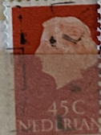
| SOURCE | TITLE| IMAGE MATCH | click to source page |
| Bob Shop | Netherlands & Colonies - Netherlands-Used-Cancel-Thematic-Famous Person was listed for 1.00 on 24 Feb at 14:06 by DeonRickTraders in Pretoria / Tshwane (ID:635520466) | 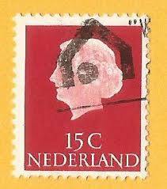 |
| eBay | Netherlands 1984 ST. SERVATIUS STATUE SC 656 MNH | eBay | 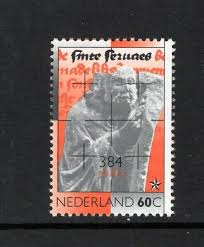 |
| breastfeeding stamp from India | 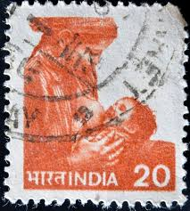 | |
| Phil India Stamps | All Products| 1957| Phil India Stamps | 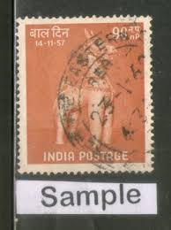 |
| Colnect | Stamp: Prof. Mr.P.J.Oud (1886-1968) (Netherlands(Politicians) Mi:NL 1153,Sn:NL 596,Yt:NL 1124,Sg:NL 1329,AFA:NL 1155,NVP:NL 1193,Un:NL 1124 📮 | 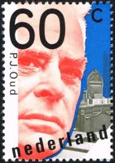 |
| Mercari | Netherlands Vintage Stamps | Mercari | 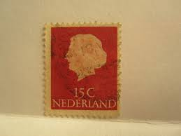 |
| eBay | Brown Used Canadian Stamps for sale | eBay | 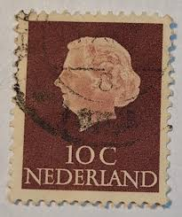 |
| eBay | Netherlands - 1953 Queen Juliana #6 | eBay | 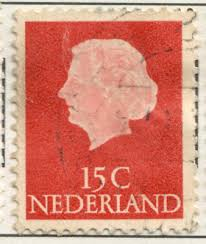 |
| PicClick | VTG NETHERLANDS STAMP 1948 Queen Juliana Coronation LOT 44 STAMPS RARE $37.50 - PicClick | 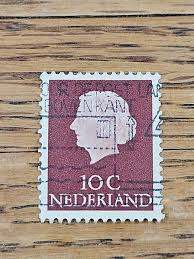 |
| HipStamp | Netherlands 1953 Sc#346, SG#777 15c Red Queen Juliana USED. | Europe - Netherlands & Colonies, General Issue Stamp / HipStamp | 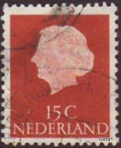 |
| eBay | Black Elizabeth II (1952-2022) Era Canadian Stamps for sale | eBay | 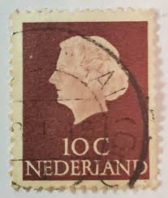 |
| Alamy | Postage stamp. Queen Regina Juliana, Netherlands, 1976 Stock Photo - Alamy | 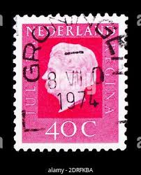 |
| Flickr | stamps Nederland Netherland | Flickr | 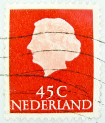 |
| Dreamstime.com | 621 Juliana Queen Stock Photos - Free & Royalty-Free Stock Photos from Dreamstime | 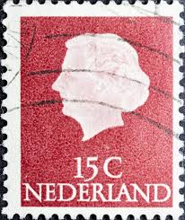 |
| lastdodo.com | Wm. H. Müller and Co. N.V. Perfin catalogue - LastDodo | 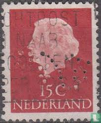 |
| eBay | Brown Royalty Elizabeth II (1952-2022) Era Canadian Stamps for sale | eBay | 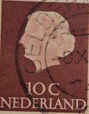 |
| HipStamp | India 839 used | Asia - India, General Issue Stamp / HipStamp | 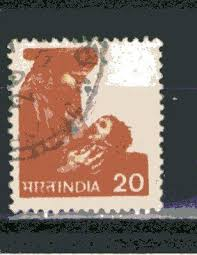 |
| commonwealthstamps.com | India 1957 SG 391 Childrens Day Fine Used | 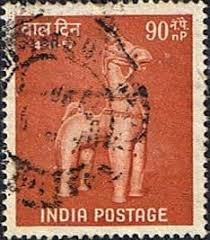 |
| eBay | Netherlands Postage ~ Queen Juliana ~ Brown 10₵ Stamp ~Used/Posted ~1953 ~ N42 | eBay | 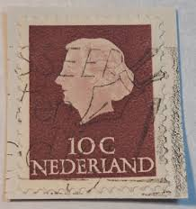 |
| Flickr | dutch stamp Netherland 60c postzegel Pays-Bas Países Bajos… | Flickr | 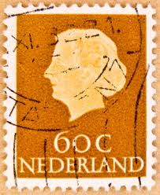 |
| Todocolección | india // yvert 35 b servicio // 1967-74 .... us - Buy Antique stamps of India on todocoleccion | 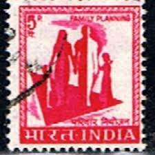 |
| Alamy | Postage stamp from the Netherlands in the Queen Juliana- Type 'En Profile' series issued in 1967 Stock Photo - Alamy | 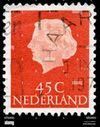 |
| ycjstamps.com | Stamp | 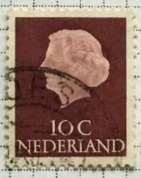 |
| eBay | Royalty Elizabeth II (1952-2022) Era Used Canadian Stamps for sale | eBay | 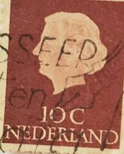 |
| Shutterstock | 26 Lippe Biesterfeld Royalty-Free Images, Stock Photos & Pictures | Shutterstock | 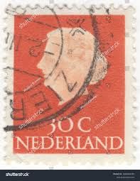 |
| ahtaunus.de | Angebote aus privater Hand - Angebote aus privater Hand |  |
| Alamy | INDIA - CIRCA 1976: A stamp printed in India, shows a symbol of family planning campaign, circa 1976 Stock Photo - Alamy | 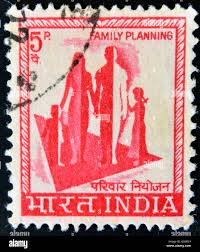 |
| eBay | U.S. Scott C64 C66 C67 C68 1962 1963 Montgomery Blair Amelia Earhart Air Mail MH | eBay | 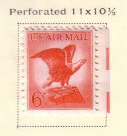 |
| Alamy | Nl 622 hi-res stock photography and images - Alamy | 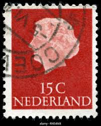 |
| eBay | RARE PERF THOMAS JEFFERSON 2 CENT USA POSTAGE STAMP, USED, GOOD CONDITION , | eBay | 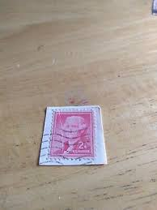 |
| indianrefugeerelieftax.com | A Comprehensive Guide for Beginners & Collectors of RRT: | 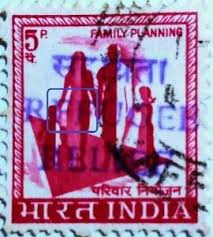 |
| eBay | Netherlands Stamp Queen Juliana 10c Used 344 Fancy Cancel | eBay | 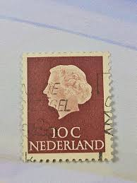 |
| lastdodo.com | Jan van Toorn [1932-2020] Stamp catalogue - LastDodo | 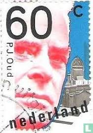 |
| eBay | Cancelled Netherlands Postage Stamp....30c, Queen Juliana 1950s | eBay | 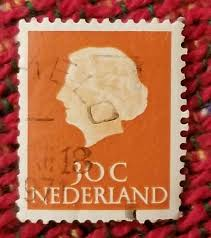 |
| Flickr | 257ke | Peter Leevers | Flickr | 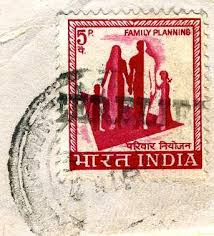 |
| Etsy | Stamp Art, Red, Regina Queen Juliana, 45 Cents, Netherlands, Used Stamps - Etsy Australia | 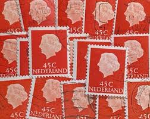 |
| bwdavis.us | Netherlands 1948 to date - Collectibles of Bwdavis | 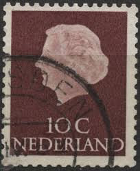 |
| Alamy | Netherlands Postage Stamp - Queen Juliana (1909-2004 Stock Photo - Alamy | 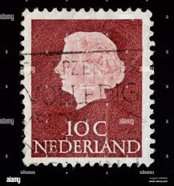 |
| Alamy | Queen stamp 1967 hi-res stock photography and images - Alamy | 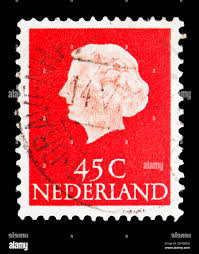 |
| Why India needs more breast milk and less Cerelac : r/india | 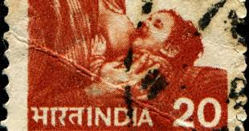 | |
| eBay | Netherlands Postage ~ Queen Juliana ~ Brown 10₵ Stamp ~Used/Posted ~1953 ~ B06 | eBay | 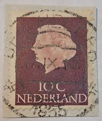 |
| Shutterstock | Netherlands Circa 1953 Postage Stamp Netherlands Stock Photo 2129107238 | Shutterstock | 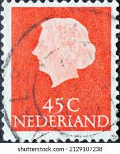 |
| HipStamp | India 5p Family Planning 1974-79 SG.725, Scott 668 Definitive Used (#08) | Asia - India, Stamp / HipStamp | 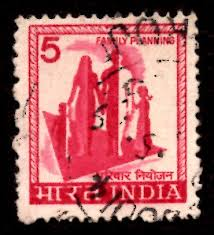 |
| Stampex India | India 1974 Mathura Museum Se-tenant Pair, Dry Print Error, Block of 4, MNH - Indian Stamp Co. | Stampex India | 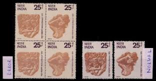 |
| Shutterstock | Dutch Stamps: Over 3,344 Royalty-Free Licensable Stock Photos | Shutterstock | 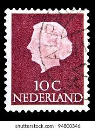 |
| Alamy | Netherlands queen juliana stamp hi-res stock photography and images - Alamy | 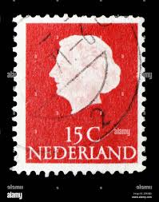 |
| iStock | Netherlands Stamp Stock Photo - Download Image Now - Europe, Mail, Netherlands - iStock | 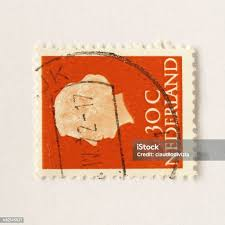 |
| eBay | Poste Italiane Foreign 20c Stamp Used - #A1219 | eBay | 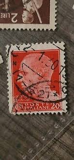 |
| Flickr | Netherlands Postage Stamp: Queen Juliana in Profile 30c | Flickr | 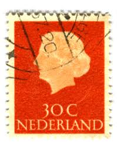 |
| eBay | India stamps - 'Family Planning' 5 Indian paisa 1967 Cerise Sg:IN 506 | eBay | 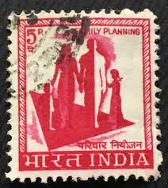 |
| Shutterstock | India Circa 1970 Stamp Printed India Stock Photo 1440723149 | Shutterstock | |
| Shutterstock | 11+ Thousand Netherlands Stamp Royalty-Free Images, Stock Photos & Pictures | Shutterstock | |
| lastdodo.de | Pieter Oud [1886-1968] Briefmarken-Katalog - LastDodo | |
| Shutterstock | 1+ Thousand Queen Wilhelmina Netherlands Royalty-Free Images, Stock Photos & Pictures | Shutterstock | |
| eBay | 1974 FDC India Dairy Congress | eBay | |
| allnumis.com | 55 + 25 Cent 1986 - Children's Stamps - Music and Literature, Children - Netherlands - Stamp - 22078 | |
| Shutterstock | 5+ Hundred Age Juliana Royalty-Free Images, Stock Photos & Pictures | Shutterstock | |
| eBay | Netherlands Stamp Queen Juliana 10c Used 344 Fancy Cancel | eBay | |
| Alamy | Mr letter hi-res stock photography and images - Alamy | |
| 20+ "Pat Kehl" profiles | LinkedIn |